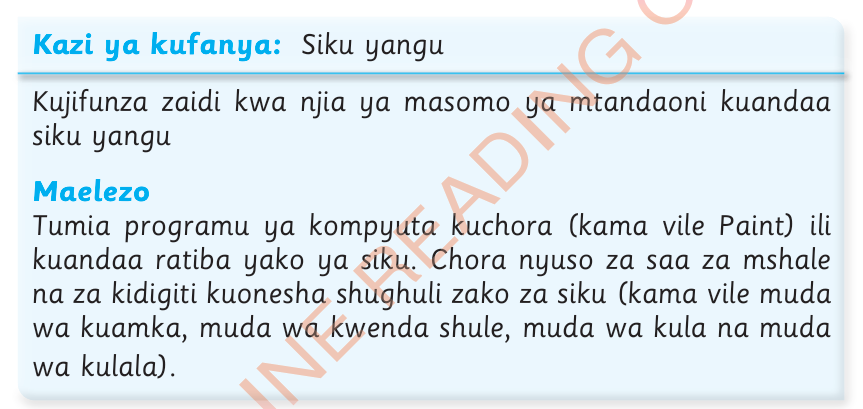

Zoezi la 6
1.
Andika majina ya miezi yenye siku 30.
2.
Andika majina yenye siku 31.
3.
Kuna Jumapili ngapi katika mwezi Julai mwaka huu.
4.
Taja mwezi ambao mara nyingi shule hufungwa kwa ajili ya likizo ya mwisho wa mwaka.
5.
Mwezi Februari mwaka huu una siku ngapi?

Kazi ya kufanya:Siku yangu
Kujifunza zaidi kwa njia ya masomo ya mtandaoni kuandaa siku yangu
Maelezo
Tumia programu ya kompyuta kuchora (kama vile Paint) ili kuandaa ratiba yako ya siku.
Chora nyuso za saa za mshale na za kidigiti kuonesha shughuli zako za siku (kama vile muda wa kuamka, muda wa kwenda shule, muda wa kula na muda wa kulala).
Jikumbushe
1.Katika uso wa saa, mshale mfupi huonesha saa, mshale mrefu huonesha dakika
2.Saa moja ni sawa na dakika 60
3.Muda hupimwa kwa siku, wiki, mwezi au mwaka
Msamiati
Nusu saadakika 30
Robo saadakika 15